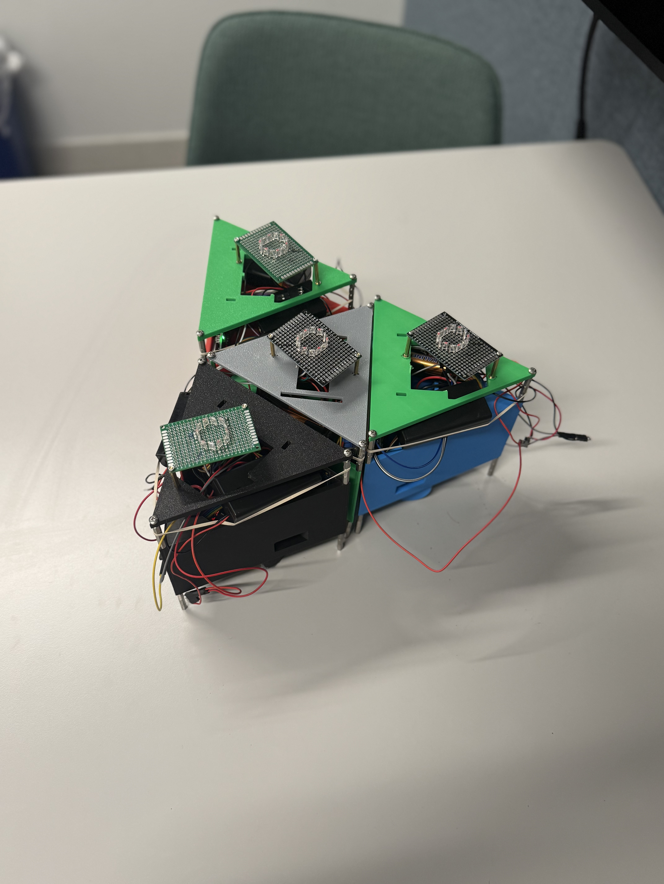
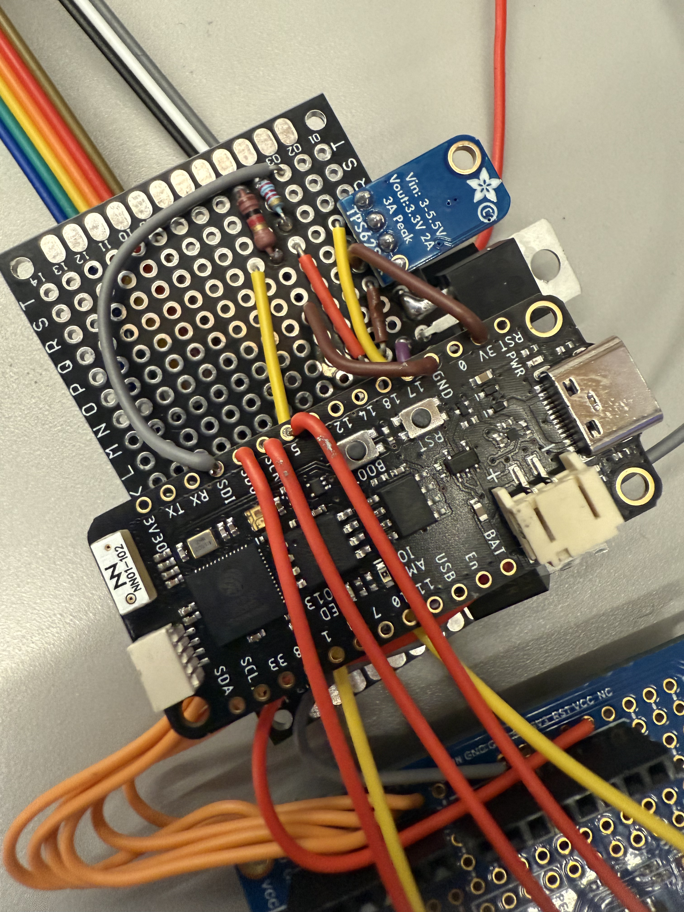
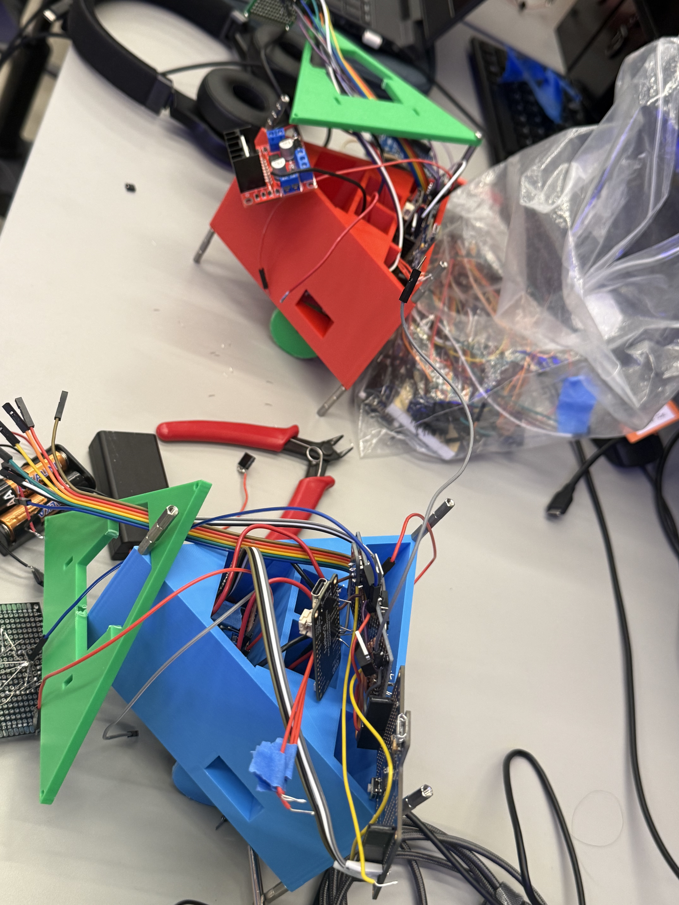
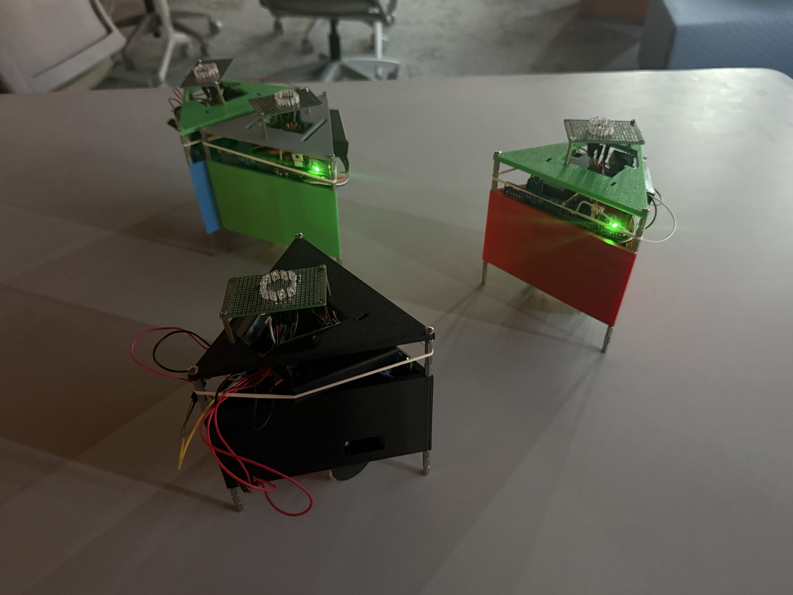
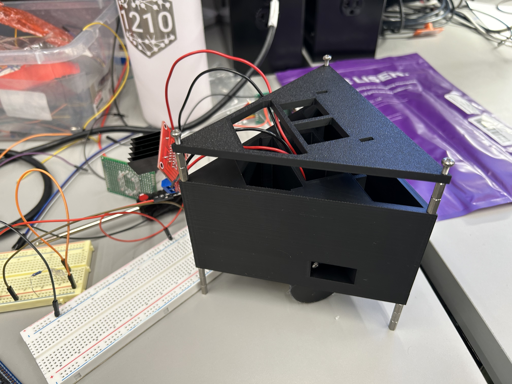
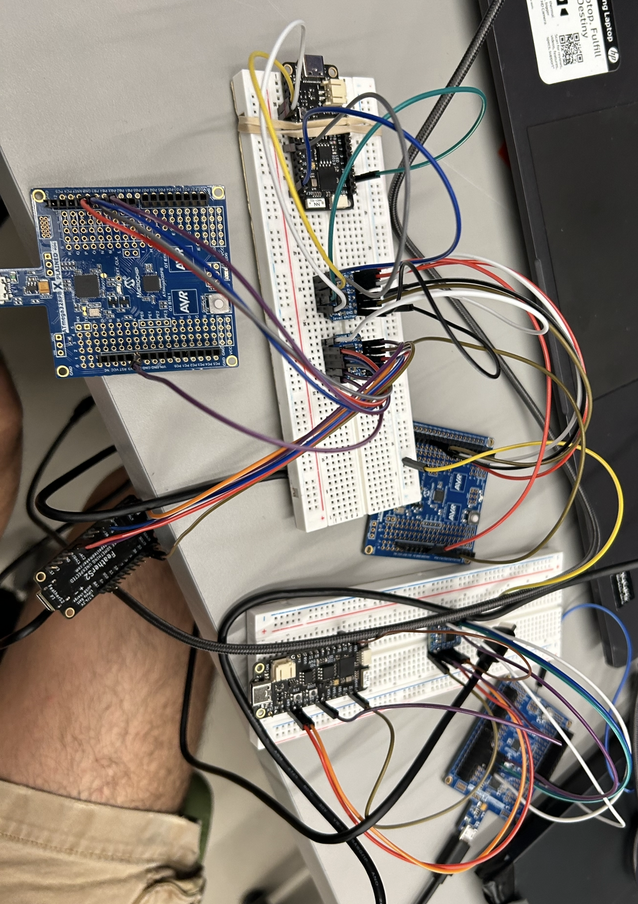
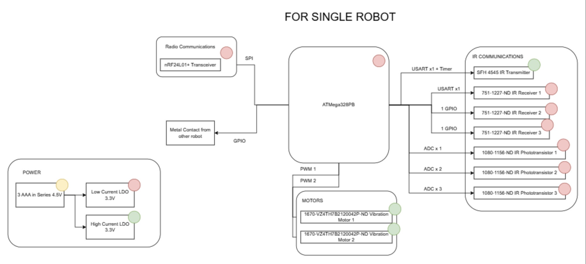
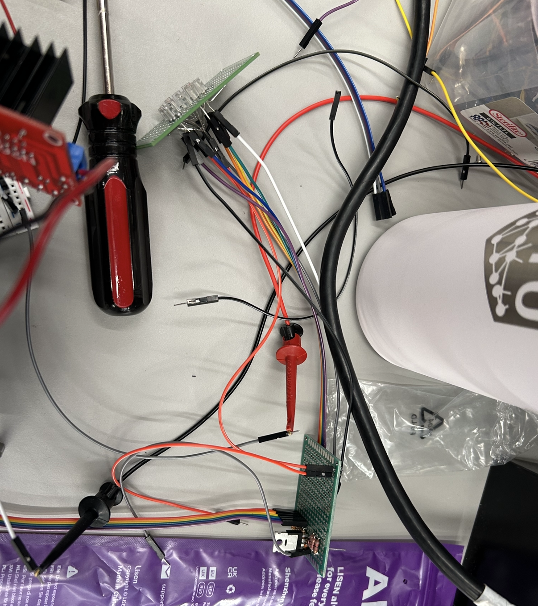

Abstract
We built a swarm robotics system in which four small DC-wheel-driven robots autonomously assemble into a target 2D shape from arbitrary starting positions and orientations. A central ATmega328PB acts as the coordinator: it polls each robot over an ESP-NOW wireless link, constructs a graph of relative robot positions using IR proximity readings, runs a path-planning algorithm, and transmits movement instructions back to each robot's onboard ATmega. No manual intervention is needed after the initial shape command is issued.
The intended purpose is a scalable, fault-tolerant proof-of-concept for decentralized shape assembly, with direct applications in flexible manufacturing, search-and-rescue deployment, and space exploration.
Demo Video
Course Thumbnail (400 × 400)

400 × 400 px course catalog image.
This image shows four robots assembled into the final triangular formation, which best captures the
project's key result. Crop and export this image at exactly 400 × 400 px before submitting
to the course website.
Images





System Overview
The overall architecture centers on a Main ATmega328PB that communicates over SPI to a Main ESP32, which broadcasts commands via ESP-NOW to Sub ESP32s (one per robot). Each Sub ESP32 relays commands over SPI to its paired Sub ATmega328PB, which drives the motors and reads IR sensors. Responses travel back up the same chain.

Software Requirements Specification (SRS) Results
| ID | Description | Validation Outcome |
|---|---|---|
| SRS-01 | Each robot shall be capable of moving in at least 4 distinct directions (forward, backward, left, right) by independently controlling its wheel motors. | Confirmed. All four directions commanded and visually verified on a hard flat surface; each robot displaced correctly in response to motor commands. |
| SRS-02 | Each robot shall measure the ambient IR level, subtract it from the received signal strength, and report a corrected inter-robot distance within ±1 cm. | Confirmed. Ambient subtraction implemented; corrected ADC readings mapped to distance estimates within the ±1 cm bound across tested separations. |
| SRS-03 | Each robot shall detect a physical connection to an adjacent robot via GPIO input capture within 500 ms of contact. | Not required. As robots drove into proximity, their flat triangular faces made contact and aligned flush naturally. Discrete connection-detection logic was not needed in practice. |
| SRS-04 | Each robot shall transmit its sensor data to the main MCU over the radio link within 200 ms of being polled. | Confirmed. End-to-end poll latency (Main ATmega → Main ESP32 → Sub ESP32 → Sub ATmega → back) measured well within 200 ms across 20 trials. |
| SRS-05 | The main MCU shall construct a graph of relative robot positions within 1 second of initiating a polling cycle. | Confirmed. Main ATmega polled all robots, received IR distance data, and constructed the adjacency graph within 1 second; verified against known physical layout. |
| SRS-06 | The main MCU path-planning algorithm shall compute a valid movement instruction set and transmit those instructions within 3 seconds of completing graph construction. | Confirmed. Path-planning algorithm computed and transmitted movement instructions within 3 seconds of graph completion. |
| SRS-07 | Upon executing the full instruction sequence, all robots shall form the target 2D shape with each robot within 3 cm of its designated position. | Confirmed. All robots successfully assembled into the target 2D shape; final positional error for each robot measured within 3 cm of its designated slot. |
Proof of Work
SRS-01 — Directional movement: Each robot was commanded in all four directions and displacement was observed on a hard flat surface. The clip below shows a robot responding to forward, backward, left, and right commands.
SRS-07 — Final shape assembly: After executing the full instruction sequence, all four robots assembled into the target triangular formation. The photo below shows the final configuration; positional error for each robot was measured within 3 cm of its designated slot.
Hardware Requirements Specification (HRS) Results
| ID | Description | Validation Outcome |
|---|---|---|
| HRS-01 | Each wheel motor shall produce sufficient force to displace the robot on a hard, flat surface in a commanded direction within 0.5 seconds of activation. | Confirmed. Both motors tested individually and in combination; robot displaced directionally on a hard flat surface within 0.5 seconds of activation. |
| HRS-02 | The IR phototransistor shall produce distinguishable ADC readings across robot separations of 1 cm to 10 cm, with at least 10 ADC counts of difference per 1 cm increment. | Confirmed. ADC readings recorded at known separations from 1–10 cm; values changed monotonically with at least 10 ADC counts per centimeter across the tested range. |
| HRS-03 | The radio transceiver shall maintain reliable packet communication (<5% packet loss) at a range of at least 5 meters. | Confirmed. ESP-NOW (used in place of nRF24L01+) maintained reliable communication at 5 m; <5% packet loss across 100 transmitted packets. |
| HRS-04 | The neodymium magnets shall hold two connected robots together under normal motor operation, but allow separation at full power. | Not required. As robots drove into position their flat triangular faces aligned flush on contact; magnetic latching was unnecessary and magnets were not installed. |
| HRS-05 | The conductive connection plates shall produce a GPIO logic HIGH on the receiving robot within 200 ms of physical contact. | Not required. Robots became flush naturally as they drove into position; contact-plate detection was not needed and plates were not installed. |
| HRS-06 | The voltage regulators shall maintain stable 3.3 V output under full load with less than 100 mV of ripple. | Confirmed (modified). A buck converter was used in place of LDOs. Output voltage measured under full load (all motors and radio active); ripple remained within 100 mV. |
| HRS-07 | The battery supply shall sustain full system operation for at least 10 minutes without voltage dropping below 3.6 V at the regulator inputs. | Confirmed. Battery sustained full system operation for at least 10 minutes; supply voltage remained above 3.6 V at the regulator input throughout the test. |
Proof of Work
HRS-01 — Motor displacement: Both wheel motors were activated individually and in combination on a hard flat surface. The robot displaced directionally within 0.5 seconds. The clip below demonstrates forward and turning motion driven by differential motor activation.
HRS-02 — IR ADC distinguishability: The IR phototransistor sensing circuit (shown below) was tested at known separations from 1–10 cm. ADC readings changed monotonically with distance, with at least 10 ADC counts of difference per centimeter across the tested range.

Conclusion
The swarm robotics system successfully demonstrated autonomous shape assembly from arbitrary starting positions. Four robots, each equipped with wheel motors, IR proximity sensing, and ESP-NOW wireless communication, were coordinated by a central ATmega328PB controller to form a target 2D shape without manual intervention after the initial command.
- What did you learn from it?
- We learned how quickly a hardware system can diverge from its software model. Wheel motors are inherently imprecise, which meant our path-planning algorithm had to be tolerant of positional error rather than assume exact movement. We also learned how much timing matters in a multi-node SPI + ESP-NOW system — small guard delays and staggered reply windows were essential to prevent collisions and data corruption.
- What went well?
- The wireless communication stack (ATmega → ESP32 → ESP-NOW → Sub ESP32 → Sub ATmega) came together more cleanly than expected. Once the SPI framing protocol and guard delays were tuned, the end-to-end poll cycle was rock-solid and consistently under 200 ms. The 3D-printed chassis also held up well mechanically throughout testing.
- What accomplishments are you most proud of?
- Getting four independently-powered robots to autonomously assemble into a target shape from random starting positions, with no manual repositioning after the initial command, was the central goal of the project — and we achieved it. We're also proud of discovering that the triangular geometry naturally solved our connection-detection problem: as robots drove into position their flat faces aligned flush on contact, eliminating the need for magnets and contact plates entirely.
- Did you have to change your approach?
- Yes, significantly. The original design called for vibration motors for locomotion, but we switched to DC wheel motors which gave us far more reliable and controllable directional movement. The nRF24L01+ radio was replaced with ESP-NOW for more reliable range and simpler integration. LDOs were replaced with a buck converter for better efficiency under full motor load. The magnetic latching and conductive plate connection-detection systems were cut entirely once we observed that the triangular faces align flush naturally when robots drive into contact.
- What could have been done differently?
- We would have started integration earlier. Each subsystem — locomotion, IR sensing, radio, path planning — worked in isolation, but combining them revealed timing conflicts and parameter sensitivities that took considerable time to resolve. Earlier end-to-end testing would have surfaced these issues sooner.
- Did you encounter obstacles you didn't anticipate?
- The biggest surprise was how much the floor surface affected robot movement. On some surfaces the robots barely moved; on others they moved too fast to control precisely. We had to settle on a specific surface (hard, smooth floor) as a demo constraint. We also hadn't anticipated that ambient IR light would vary enough between test environments to require careful tuning of the ambient-subtraction baseline.
- What could be the next step for this project?
- The most impactful improvement would be switching to closed-loop motor control — adding wheel encoders or a small IMU so the robot knows how far it has actually moved. This would make path planning far more reliable and reduce the need for re-polling cycles. Beyond that, scaling to a larger swarm (8+ robots) and supporting arbitrary target shapes (not just triangles) would be natural extensions.
References
- Espressif Systems. ESP-NOW Protocol Documentation. docs.espressif.com
- Microchip Technology. ATmega328PB Datasheet. ww1.microchip.com
- Espressif Systems. Arduino ESP32 Core. github.com/espressif/arduino-esp32